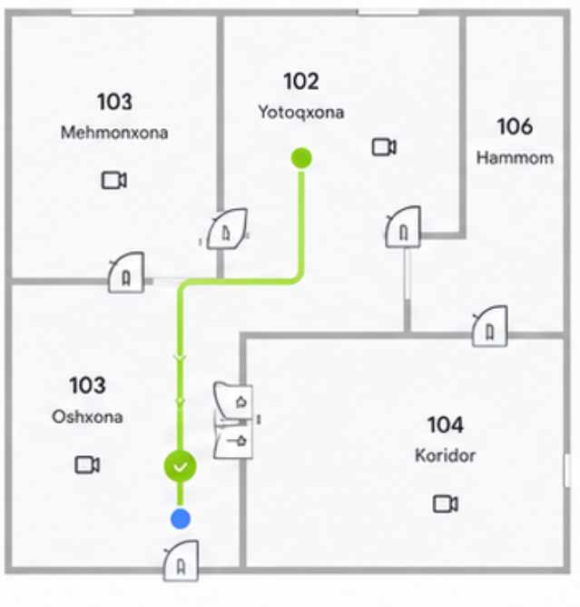

Masofaviy ko'rik sessiyasi
Mehmon uchun masofaviy ko'rikni boshqaring va xavfsiz kirishni ta'minlang.
Sessiya faol00:08:24
1-qavat
Siz
Mehmon

Kamera
Eshik
Ruxsat etilgan yo'l
Eshiklarni masofadan boshqarish
Mehmonga kirish uchun eshiklarni oching.
Bosh eshikKirish
101 | MehmonxonaIchki eshik
102 | YotoqxonaIchki eshik
103 | OshxonaIchki eshik
Balkon eshigiChiqish
Infratuzilma
Mehmon bilan sessiya davomida bo'lishiladi — kirish nuqtalari va kommunikatsiyalar haqida.
Suv ta'minotiShahar tarmog'idan, kirish — oshxona orqasidagi texnik shkaf
Gaz ta'minotiTabiiy gaz, hisoblagich — oshxona, pol yaqinida
Elektr ta'minoti220V, asosiy taqsimlash shkafi — kirish eshigi yonida
KanalizatsiyaShahar tarmog'iga ulangan, tozalash quduq — hovli tomonida
To'liq texnik hujjatlar va sxema uchun obyekt kartasidagi Infratuzilma bo'limiga qarang.